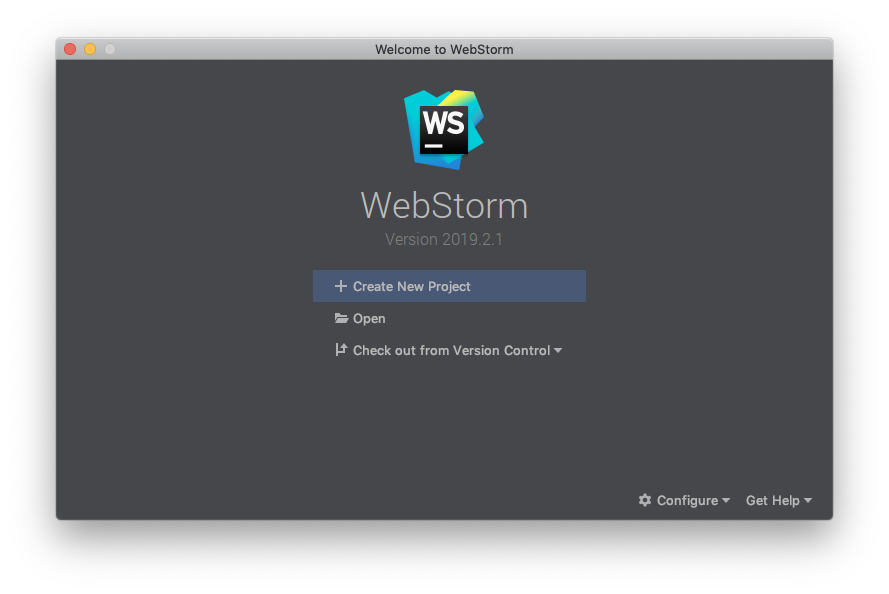
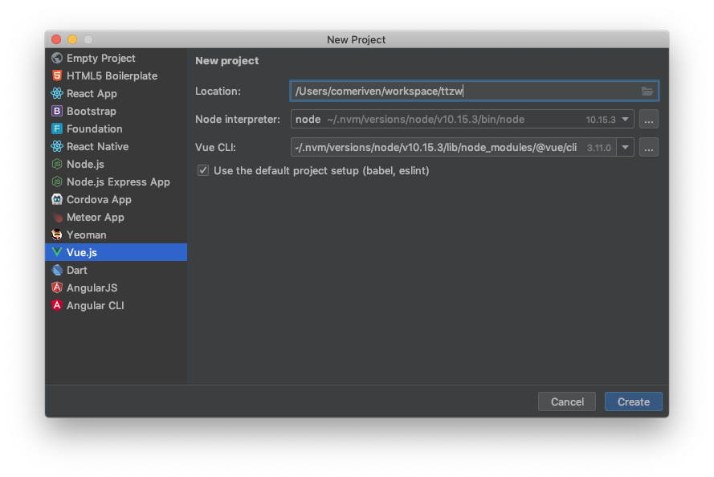
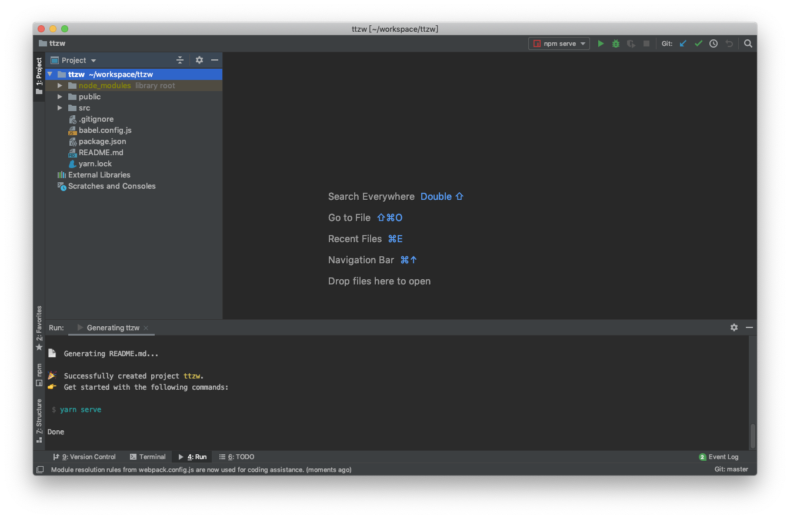
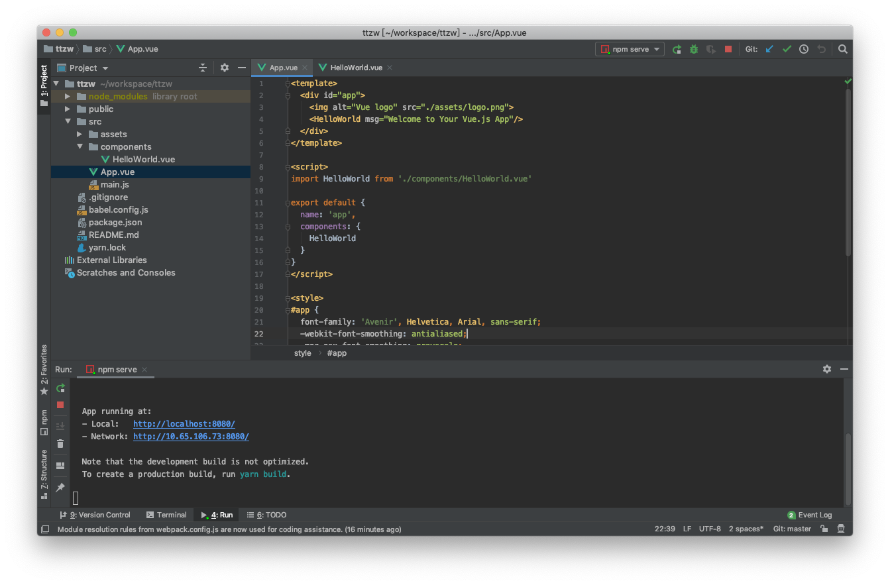
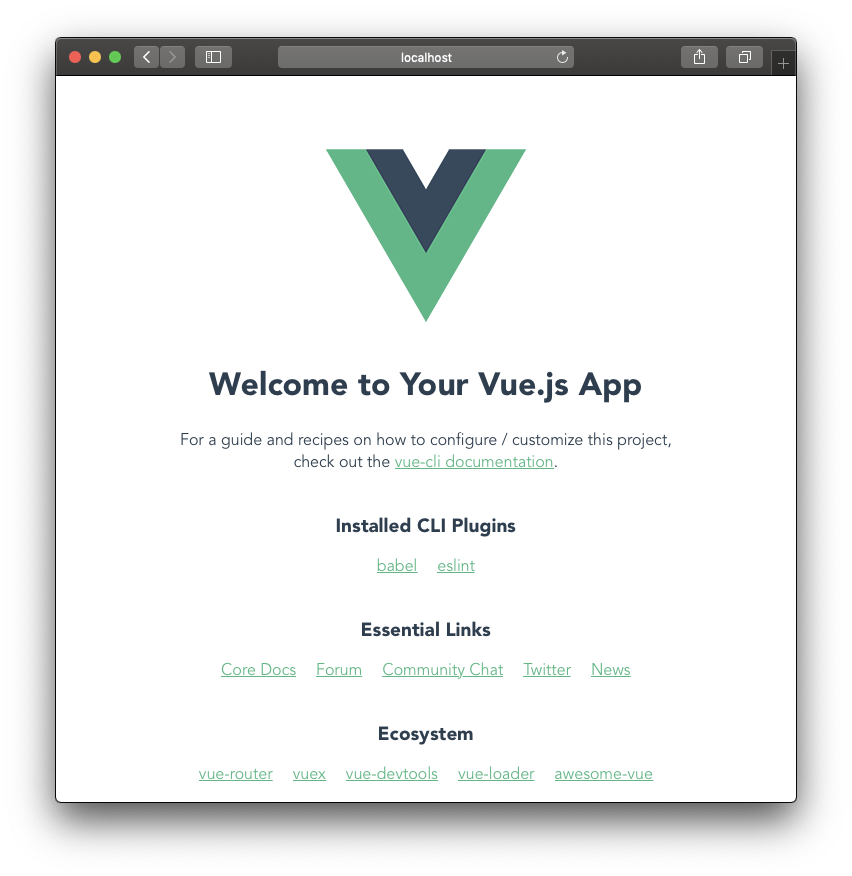

vue introduction
介绍
Vue (读音 /vjuː/，类似于 view) 是一套用于构建用户界面的渐进式框架。与其它大型框架不同的是，Vue 被设计为可以自底向上逐层应用。Vue 的核心库只关注视图层，不仅易于上手，还便于与第三方库或既有项目整合。
和 react 还挺相似的，都专注于视图层，但是 vue 的门槛要低一点，对中文的支持比较好。
OK，我们需要光速入门vue，直接上手做项目，不需要深入去理解vue设计思想各种，抛弃一切复杂的内容，仅仅保留我们需要的知识点，快速实现能用vue来制作一个网站，并且搭配全家桶，什么路由啊，什么状态管理的。
我们想要学习一个新的知识，首先要做的不是买书，买视频什么的，第一件事我们需要提炼一下这个技术有什么样的知识点，然后总结记录下来，一样一样的学习这些知识点，然后在组成一个完整的体系，这样我们就掌握了这些知识。
总结下来我们需要知道这些知识点：
- Vue 知识点
- vue-cli工具
- 安装
- 创建项目
- 包管理
- 组件
- 创建组件
- 组件的生命周期
- 属性和状态
- 样式处理
- 表单处理
- 组件之间的通信
- 数据绑定和渲染
- 双向数据绑定
- 模板语法怎么用
- 模板语法有哪些
- 路由
- Vue-router
- 状态管理
- vuex
安装
工具
官网不推荐我们使用 vue-cli 来开启我们的 vue 之旅，不过因为我懂一点点浅薄的 react 知识，所以我决定不听尤雨溪大佬的，直接使用vue-cli来创建我们的demo。
首先，我们需要有 node 和 npm，这里我推荐使用 nvm 来安装node，这样的话方便管理我们的node版本。点击前面的 nvm 超链接查看怎么安装和配置。
第二步，安装vue-cli.
vue-cli 是旧版本的称呼，新版本改成了@vue/cli，来一段儿引用先：
Vue CLI 的包名称由
vue-cli改成了@vue/cli。 如果你已经全局安装了旧版本的vue-cli(1.x 或 2.x)，你需要先通过npm uninstall vue-cli -g或yarn global remove vue-cli卸载它。Vue CLI 需要 Node.js 8.9 或更高版本 (推荐 8.11.0+)。你可以使用 nvm 或 nvm-windows在同一台电脑中管理多个 Node 版本。
先来看看我的 node 版本和 npm 版本：

接下来我们需要安装一些 @vue/cli
1 | ~$ npm install -g @vue/cli |
如果你是用的 yarn 的话这样安装：
1 | ~$ yarn global add @vue/cli |
验证一下有没有安装成功：
1 | ~$ vue --version |
看到版本号就是安装成功的。
接下来我们需要安装开发工具，这里推荐使用 webstorm，不一样的开发体验。

安装也很简单：
1 | ~$ brew cask install webstorm |
创建项目
@vue/cli 提供了非常方便创建项目的命令，可以同时安装一些包，如果你嫌麻烦的话也可以选择直接使用webstorm来创建你的vue项目，会简单快捷，但是不能，让你选择要安装其他包，如果有需要配置的包，你还需要额外在配置。
另外 @vue/cli 还提供了一套 web 界面来创建和管理项目。这点比 react 的脚手架 create-react-app 好无数倍。
这里我就头铁的选择webstorm 来创建项目的方式。
根据上图，点击 Create New Project，进入这个界面：

左侧边栏选择Vue.js，然后在右侧Location中选择你的项目路径，比如我的项目是存放在~/workspace目录下，于是我这边增加一个ttzw的项目，路径就如上图是：~/workspace/ttzw
点击Create按钮，webstorm会自动创建目录，并且安装依赖。

好了，安装完成。现在长这样，我们可以点击上面绿色的三角按钮来启动项目，也可以在Terminal中输入yarn serve来启动项目。
1 | ╭─ ~/workspace/ttzw master |
来看下结构.
README.md 你懂的。
babel.config.js 是babel 的配置文件，如果你需要更改babel配置的话，修改这个文件。
node_modules，依赖包安装目录
public，静态资源存放目录，比如模板 index.html
src, 源代码目录，我们所有的开发都应该在这个目录下面。
package.json，是npm的描述性文件，我们依赖，如何启动项目各种全部在这个json文件中可以找到。
点击顶上的绿色三角，启动项目。

项目启动后，在Run中可以看到项目启动的信息，点击Local这个后面的超链接 http://localhost:8080/ 就能看到我们启动的项目了，之后就可以开始开发了。

组件
组件这玩意儿可以说是vue的核心了，我们可以把我们开发的web应用的每一个功能模块，甚至每一个元素都看作一个组件，就像「乐高积木」一样，一块块积木按照一定的顺序，位置，放在固定的地方，就能搭建成一个微型的小世界。组件也是如此，一个一个的小组件堆积起来就能构成我们的应用。
其中区别在于我们组件是可以复用的，但是积木却不能复用。

创建组件
实战 永远是最好的老师，接下来我们要真刀真枪的干一场，写一个反洗钱系统，我们优先跳过组件这一节，先看路由和状态管理。
组件的生命周期
属性和状态
样式处理
表单处理
组件之间通信
路由
Vue-router
我们先来了解下路由的概念。
在维基百科中路由是这样描述的：
路由（routing）就是通过互联的网络把信息从源地址传输到目的地址的活动。
那我们更直白一点，可以这样解释：
把甲方👨的需求扔给对应的乙方开发🐶的产品🐶，就叫做路由。
注意看，对应两个字标记了斜体，我们看到的应用，其实背后有一个或者多个开发🐶在干活，每个🐶大佬做不同的工作，组合起来称为我们看到的应用。需求方👨将需求提出来，🐶产品（路由）收到需求，然后根据需求的不同分配给不同的🐶大佬，这个过程就是路由所完成的。